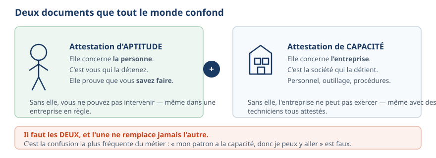

Aptitude et capacité : la personne et l'entreprise
Le texte de la planche (16)
Deux documents que tout le monde confond · Attestation d'APTITUDE · Elle concerne la personne . · C'est vous qui la détenez. · Elle prouve que vous savez faire . · Sans elle, vous ne pouvez pas intervenir — même dans une · entreprise en règle. · Attestation de CAPACITÉ · Elle concerne l'entreprise . · C'est la société qui la détient. · Personnel, outillage, procédures. · Sans elle, l'entreprise ne peut pas exercer — même avec des · techniciens tous attestés. · + · Il faut les DEUX, et l'une ne remplace jamais l'autre. · C'est la confusion la plus fréquente du métier : « mon patron a la capacité, donc je peux y aller » est faux.